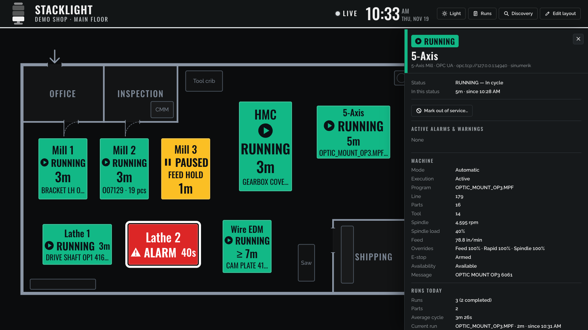
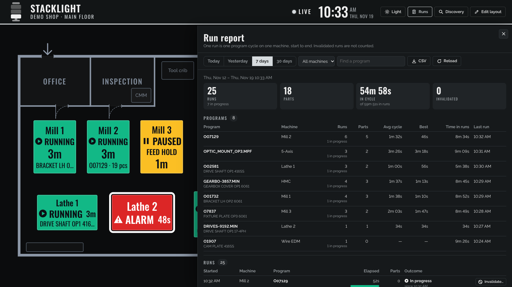
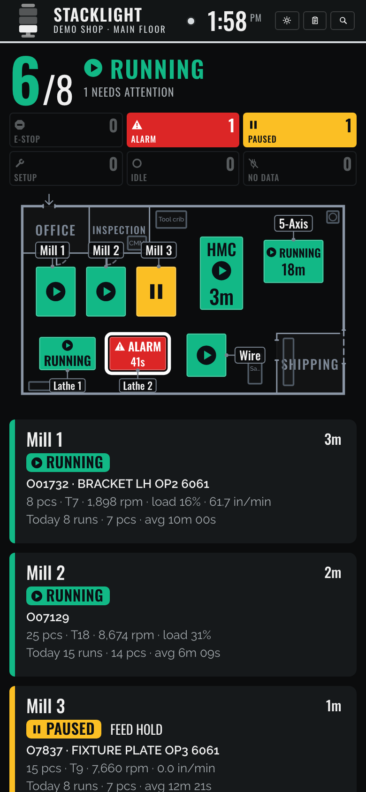

Your whole shop on one screen
Stacklight shows what every CNC is doing right now: running, paused, idle or in alarm. It runs on a small box in your building, and you buy it once.
$600 a machine, once. No subscription. No cloud.
Recorded from the product, running a demo shop with simulated machines.
See it
Watch it work
The board, a machine in alarm, a machine cutting, and the run report, in under half a minute. Everything here is recorded from the product itself, running a demo shop with simulated machines.
Try the live demoThe real board with a simulated shop, right in your browser. Tap any machine, or open the run report.






What it shows
Walk in and know
Your floor plan on a TV, with every machine where it stands and its color telling you what it's doing.
The whole floor
One look tells you which machines are cutting and which one needs somebody. No walking the floor to find out.
Each machine
Tap a machine to see how long it has been in its current state, the program it's running, and how much of the last 12 hours it spent cutting.
The run report
How long each machine and each program really ran: today, yesterday, the last 7 days or the last 30. Export it to a spreadsheet.
Any screen
The TV on the floor, the PC in the office, the phone in your pocket on shop Wi-Fi. They open the board in a browser, with nothing to install.
Why shops pick it
Priced like a tool, not a subscription
Shop software has turned into monthly bills and hour-long demos. Stacklight is built the other way.
You own it
Pay once per machine. Updates and help are included for the first year and optional after that. Skip them and everything keeps running.
It stays in your building
Stacklight runs on a small box on your own network. No cloud account, no internet needed, and your production numbers never leave the shop.
It only watches
The board reads status from your controls. It can't start, stop or change anything on a machine.
The price is on this page
You shouldn't need a sales call to find out what something costs. Scroll down.
Your machines
A straight answer on what connects
Every make of control goes through the same three steps. Here is where each one stands today.
- ConfirmedRunning in a production shop.
- Verifying nowBeing proven on a real machine.
- On the wayBuilt, and tested against simulators.
FANUC
Confirmed
Proven on the 31i. Other FANUC controls with an Ethernet port connect the same way.
Haas
Verifying now
Newer controls connect over the network. Older ones use a small adapter.
Okuma
Verifying now
OSP-P300 and newer, through MTConnect.
Mazak
On the way
Smooth and Matrix 2 controls, through MTConnect.
Siemens
On the way
SINUMERIK controls, through OPC UA.
Heidenhain, Brother and others
On the way
Any control that speaks MTConnect or OPC UA.
Send us your machine list: make, model, control and year. We'll tell you where each one stands before you spend anything.
Price
One price list, for everyone
Priced per machine, so a three-machine shop and a thirty-machine shop each pay their share.
Own it
- The live board, history, run report and phone view
- First 12 months of updates and help
- Set-up with you included
Or spread it out
- Everything in the license, with updates and help while you pay
- After 24 payments it's yours
- $720 in all: the extra $120 is the second year of updates and help
| Six machinesA typical small shop | $3,600 once, or $180 a month |
| Updates and help after the first yearOptional. Covers every add-on you own. Let it lapse and the board keeps running, with no back fees to come back. | $120 a machine a year |
| The box, ready to runOr use a Windows PC you already have that stays on. | $600 |
| Coming next: text alerts and a daily summaryIncluded in your license when they ship. | Included |
| Coming next: program transferSend programs to your controls from the board. Optional. | $150 a machine |
| Coming next: maintenance boardWhat's due on each machine, and when. Optional. | $100 a machine |
Prices don't include sales tax.
How it starts
Three steps to a board on the wall
Send your machine list
Make, model, control and year for each machine. We'll tell you which ones will connect.
We check on your network
A scan that only reads confirms which controls answer, before you pay anything.
The board goes up
We set up the box, draw your floor plan and connect each machine with you.
Questions
What shops ask first
Do I need internet?
No. Stacklight runs on your shop network and needs no cloud account and no internet connection.
Is there a subscription?
No. You buy a license for each machine and it's yours. Updates and help are included for a year. After that they're optional at $120 a machine a year, and if you skip them the board keeps running.
Can it change anything on my machines?
No. The board only reads status. It can't start, stop or edit anything on a control.
What do I need in my shop?
A network connection to each control (usually a cable), a TV, and either the Stacklight box or a Windows PC that stays on.
Who can see my data?
You. It stays on the box in your building. We connect to help only when you allow it.
What does the monthly option cost in the end?
$720 a machine over two years, against $600 up front. The extra $120 is the second year of updates and help, which an up-front buyer would pay separately. After 24 payments the license is yours.
Who makes it?
Stacklight is a product of Bear Creek Systems, LLC. It was built on the floor of a working CNC shop, with the people who run the machines.
Find out what your shop is doing right now
Send your machine list. You'll get a straight answer on what connects and what it costs.
Check my machinesOr write to hello@stacklight.shop